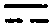

卍新纂大日本續藏經 第63冊
No.1238 寶鏡三昧原宗辨謬說 (1卷)
【清 淨訥述】
第 1 卷
No. 1238
寶鏡三昧原宗辨謬說
世尊凡為說法。或先舉喻。次舉法。或先舉法。次舉喻。謂之法喻相參。以曉未悟。此古今說法之恒規也。雲巖寶鏡三昧。建章二十六句。廣舉大法為案。恐人以文害義。故引嬰兒喻作證。所謂如世嬰兒。五相完具。不去不來。不起不住。婆婆和和。有句無句。下復舉重離一喻曰。如離六爻。偏正回互。疊而為三。變盡成五。此謂以喻合喻。使人了了無疑。雲巖惟取重離一卦為喻。此外竝無干涉。故曰疊而為三。變盡成五。所云三疊五變。是法數。非卦數。是藉卦之陰陽二爻。以明偏正回互之義。以疊三喻三德。變五喻五位。五本乎三。三本乎一。合上嬰兒喻。雖有五相。而具於一人。恐人於此起三五異見。乃重說二喻曰。如荎草味。如金剛杵。草雖五味。具於一枚。杵雖三相。具於一事。前後四喻皆以總攝別。以體攝用。諄諄發明三德五位。悉本乎一心。故斷章取義。專取重離為喻。即事顯理。以彰正偏妙叶之旨。何得浪談易理。認婉喻為正解乎。或曰。何謂三德。曰法身。般若。解脫。是也。何謂五位。曰正中偏。偏中正。正中來。兼中至。兼中到。此洞山之建立也。以至五位君臣。五位功勳。五位王子。皆原此爾立。名異而體同。其所本者。亦從大教住行向地等妙發來。故舉五則攝盡一切差別無餘也。
或曰。三德於重離。如何分配。曰初疊即重離初爻二爻二。二疊即三爻四爻二。三疊即五爻六爻二。每一疊取陰陽兩爻為喻。在卦乃乘承比應。是世間之道。在法乃體用回互。是出世間之道。故借喻以顯其法也。
如初疊卦義兩爻一陽一陰。首得乾之初九。為少陽而居陽位。取乾元善長之本。以喻初住之根本智。無一法當情。所謂正位也。次得坤之六二。為少陰而居陰位。取敬以直內義。以方外之德用。喻初住之普賢行。涉大功勳。所謂偏位也。智行互參。直透過五十二位而回入妙有。五位一貫。故初成般若德也。
如二疊卦義兩爻純陽。初得乾之九三。為太陽而居陽位。次得乾之九四。為老陽而居陰位。剛柔互徹。理事合明。故於法喻大智。已滿大行。已圓成等正覺。故次成法身德也。
如三疊卦義兩爻一陰一陽。首得坤之六五。為太陰而居太陽之位。次得乾之上九。為老陽而居老陰之位。其動而無動。靜而無靜。動靜恒如。非離非即。故於法喻五位。佛果已畢。隱勝現劣。隨類化身。非凡而凡。非聖而聖。生佛二習。悉皆融化。故末成解脫德也。
或曰。五位於重離五變。如何分配。曰即以六爻。從下至上。而互成五變也。每一變用上下二爻陰陽交徹。以喻偏正回互之旨。首以初爻之少陽。比二爻之少陰。為一變。陽剛而陰柔。喻初位正中偏。以明從體起用。寂而常照也。次即二爻之少陰。比三爻之太陽。陰極而陽生。喻第二位偏中正。以明攝用歸體。照而常寂也。次即三爻之太陽。比四爻之老陽[一/一]。陽極而暗動。喻第三位正中來。以明體用圓明。功位齊彰。寂照一如也。次即四爻之老陽。比五爻之老陰。為陽隱於陰。陰升於陽。隱顯自在。觸背俱非。喻第四位兼中至。以明道後普賢行。行彌法界。機彼無遺。非寂非照也。次即五爻之老陰。比六爻之老陽。陰居陽位。明用無窮。陽居陰位。大功不宰。頭頭上顯。事事無礙。喻第五位兼中到。以明聖凡一際。生佛兩忘。齊與法界。而法界量滅。寂照同泯也。
此雲巖所引。重離一卦。觀爻相。有如此回互之妙。乃拈來為喻。初以六爻分三疊。以象三德。次以六爻分五變。以象五位。不動本卦。而三五之體用回互。位位本自天然。有如伏羲神禹。見河洛二圖。陰陽法數。遂援數以窮理。堪為儒宗。兼可通於釋宗。作人天之眼目也。若覺範之非理變卦。非理配法。其違戾儒佛之旨。遺害於千古之後。滔滔而莫之返。可不痛乎。
辯謬諸條不錄。莫大義以明。則諸謬自消矣。茲更錄諸師建立宗旨大意數條觀之。則不墮邪謬矣。
第一雲巖如離六爻偏正回互者。此單取爻相。奇偶發明。五位回互。所謂錯然則吉。不可犯忤。觀錯然二字。則知指奇偶為言。若各居本位。則滯在觸背。乃犯忤之過也。即此可知。是取奇偶。非取卦義。明矣。即如正偏五位。亦是秉華嚴住行向地等妙為宗。不然。何不停四至六。是知先德准此五位為式。乃建立五位正偏。詳而示之。初位正中偏之正者。乃的指大悟一真法界之空如來藏性為體。是道前文殊之智。舍事就理為宗也。纔入正位。不許坐著。坐著則成滲漏。故著一偏字。以遣我執。乃能從體起用也。第二位偏中正之偏者。與初位偏字稍別。謂是從體起用。五十二位大行。多涉有為。舍理就事。轉功就位。是大悟已後。證不空如來藏性為用。纔涉功勳。不許坐著。坐著則成滲漏。故著一正字。以遣法執。方能圓滿佛果。此一正字。乃道後之後得智。是以諸佛果地覺之正。本初位諸佛因地心之正。而為言也。此兩位是圓教五十二位智行互融因果一如之般若德也。如善財初見文殊。末見普賢。是智行圓滿佛果之位。無二無別也。第三正中來者。此一正字。是攝前因果一如之正。為佛果已滿。方堪垂法利生。是初住八相成道。已證法身德。而現應化二身。善赴羣機。故曰正中來也。第四兼中至者。此明道後普賢行。謂兼前三位之旨。至者周也。謂佛果之後。乃純是利他之行。一一周徧法界。而無遺矣。如華嚴現等法界身雲利等法界眾生。故曰至也。第五位兼中到者。謂到此位。兼前四位。一齊泯踪絕跡。生佛如如。依正如如。是一真法界。並無三世十方迷悟聖凡之跡。故曰到也。到者墮也。不然。則三漏齊犯。故以三墮齊收。而成解解德也。然此五位即一位。故復引荎草。而為喻也。五位皆屬建立。為方便接引。故喻如嬰兒也。三德本乎一心。故喻如金剛杵也。此略言雲巖建旨之妙。如是。
第二洞山价祖。根正偏。復建五位功勳者。蓋恐學人坐著正偏。遂以乾慧為足。則道果難臻。故於各位下。建立功勳。以明五位進修淺深之旨。其於正中偏下。立向位者。謂念念趨向根本不動智佛。始得其正。則知初位以趨向。為功勳也。於偏中正下。立奉位者。謂五十二位階級。念念奉重佛果為宗。始得佛果圓滿。故以奉重。為功勳也。於正中來下。立功位者。謂乘前五十二位有修有證之功。而至妙覺無修無證之果。故獨以大功。為功勳也。於兼中至下。立共功者。謂道後普賢行。乃攝化無餘。必須感應道交。方堪受化。所謂賓主交光。真俗一致。故以共功。為功勳也。於兼中到下。立功功位者。謂前四位。是有為無為之道。通屬自利利他邊事。而心佛眾生。不能泯跡。於此位。乃得心佛眾生同歸實際。是以智遣智。渾合如如。故曰功功也。
第三曹山寂祖。又根功勳。而立五位君臣者。此明正偏五位尊卑主伴之德相也。故於正中偏下。立君視臣。是喻從體起用之德相也。於偏中正下。立臣奉君。是喻攝用歸體之德相也。於正中來下。立君位居中。是喻因果一如。理事互融之德相也。於兼中至下。立臣位。是喻道後普賢大行純是利他。為冥應羣生之德相也。於兼中到下。立君臣道合。是喻凡聖同泯。正符華嚴六相之壞相也。
第四石霜諸祖。又根正偏功勳君臣之制。而立五位王子者。此單明五位權實二智之差別也。五位皆以生為言者。顯二智之發生也。五位皆以王為言者。顯尊卑自在之義也。五位皆以子為言者。顯智種嗣息之義也。蓋物物有智。常被五蘊八識所覆。必值佛祖啟迪。乃能開發。從始至終。權實不同。故應五位次第建立。始盡萬法源底。於初位下。立為誕生王子者。謂即根本無明。而成不動之智。此智向者隱覆。今乃初發。是根本智。故喻為誕生也。於第二位下。立為朝生者。是從真際。起大功勳。破九界無明。起十度大行。已涉有為。是差別智。故喻為朝生也。前位是夜半正明。此位是天曉不露。故名回互。於第三位下。立為末生者。是功位已滿。即補處位。唯此最後一生。即便八相成道。是後得智。故喻為末生也。於第四位下。立為化生者。是道後普賢行。乃冥應羣機之種智。而變化莫測。故直云化生也。於第五位下。立為內生者。是攝前四位。齊至法界。而法界量滅。同歸實際。是一真法界大寂滅忍。當生亦不生。故喻如內生也。
以上四種建立同異之旨。總不外始祖重離六爻一喻。所謂疊三成五天然自成之妙。是顯自性因果一周。與華嚴六相義。無二無別。故余已悉於辯謬之中。毫無可惑。今復見以曹山君臣五位之圖。前後移置者。故再為詳明之。如謂正中之君位。可移置於初位。第四臣位。可移置於二位。第一君視臣。可移置於第三位。第二臣奉君。可移置於第四位。將復謂雲巖正位之正中來。洞山正位之功位。石霜正位之末生王子。皆可移在初位乎。三種正位。斷不可移。則知三家先後各二位。皆不可移。明矣。若明此四種建立必不可移。即知雲巖重離六爻之喻詎容損益絲毫。而吾於辯謬集中。所詳三疊五變之義。彰明較著。復何疑哉。即以先代君臣五位黑白間錯之圖式。參對重離奇偶陰陽之爻象。與正偏功勳王子三種建立之法式。位位貼體。參合無不相符。如以日照日。至此則知石門所撰。巽兌中孚大過之卦義。內紹外紹之王種義。大慧所註。宰相將軍庶民之子。黑處說白。白處說黑。回互之義。豈不大相刺謬也哉。諸家隨聲逐響。而宗其說。大似謗佛謗祖。慎之慎之。
寶鏡三昧原宗辨謬說(終)